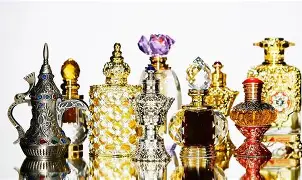
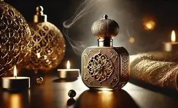

El origen milenario del perfume árabe y su impacto cultural
Los perfumes árabes poseen una historia profundamente arraigada en la cultura del Medio Oriente. Desde la antigüedad, las civilizaciones de Arabia, Persia y Mesopotamia desarrollaron técnicas avanzadas de extracción aromática que luego influirían en la perfumería moderna. Estas fragancias no solo se utilizaban como símbolo de estatus, sino también en rituales religiosos, ceremonias matrimoniales y prácticas comerciales.

Un viaje a la cuna de la perfumería
Los pueblos del desierto descubrieron que ciertas maderas, resinas y plantas desprendían aromas intensos cuando se calentaban o trituraban. Entre ellas destacaron el incienso, la mirra, el sándalo y el ambar gris. Con el tiempo, estos ingredientes se volvieron productos de lujo cotizados en rutas comerciales que conectaban Arabia con India, África y Europa.

El oud: el diamante de la perfumería árabe
El oud, también conocido como “oro líquido”, es el ingrediente más reconocido de la perfumería árabe. Se obtiene del árbol de agarwood, un recurso escaso y altamente valorizado. Su aroma es intenso, profundo, amaderado y ligeramente ahumado, con notas cálidas que evocan lujo y misticismo.
Para las culturas árabes, el oud no es solo un perfume: es parte de su identidad. Se utiliza en reuniones familiares, celebraciones, perfumar hogares, mezquitas y prendas tradicionales.
Técnicas ancestrales que cambiaron el mundo
Los árabes perfeccionaron la destilación a través del uso del alambique, una herramienta que permitió obtener esencias puras de flores y maderas. Este avance científico fue fundamental para que Europa pudiera desarrollar su industria perfumera siglos más tarde.

La influencia en la perfumería de lujo moderna
En los últimos años, marcas europeas como Tom Ford, Dior, Versace, Armani o Yves Saint Laurent incorporaron el oud en sus líneas más exclusivas. Esto se debe al creciente interés global por las fragancias intensas, duraderas y de carácter oriental.
La perfumería árabe también ganó popularidad por su relación calidad-precio. Marcas como Ajmal, Lattafa, Armaf y Swiss Arabian ofrecen fragancias con alto rendimiento a costos accesibles, lo cual impulsó su viralidad en redes sociales.
Un legado que trasciende generaciones
Los perfumes árabes no son simples productos: transmiten historia, tradición, espiritualidad y elegancia. Representan un arte milenario que continúa evolucionando sin perder su esencia. El auge actual demuestra que el mundo contemporáneo sigue fascinado por la profundidad y el misterio de estas fragancias ancestrales.
← Volver a publicaciones